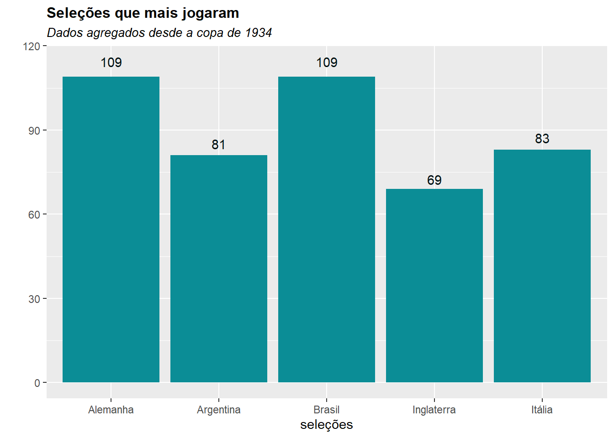
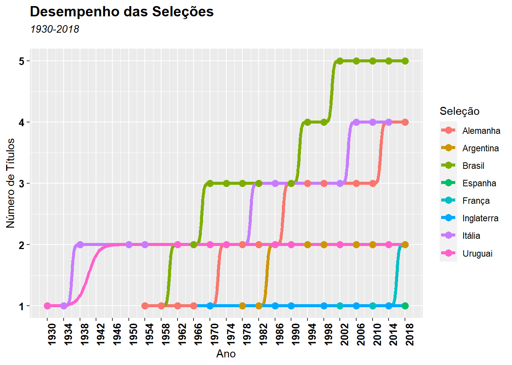
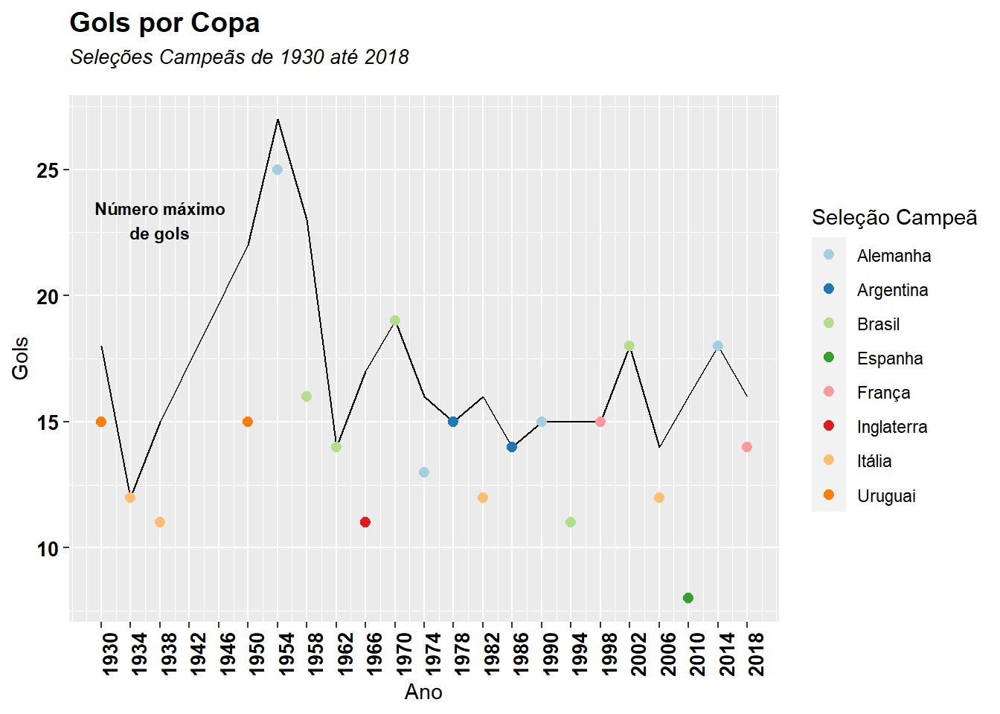

Introdução
O (Bryan 2022) é um pacote que pode acessas dados de planilhas do google sheets via API. É interessante armazenar dados na nuvem, pois economiza memória e te permite acessa-los de outros locais de uma forma segura.
Os Dados
Olhando o youtube me deparei com um evento gratuito de ensino de Power Bi e Excel com tema copa do mundo nada mais justo do que dar os devidos créditos, Leonardo - Power Bi Experience.
A planilha (xlsx) foi baixada e convertida para uma google sheet (Explicado nesse tópico: Manipulações). É um conjunto de dados sobre a copa do mundo que traz o desempenho das seleções em cada edição, os artilheiros e detalhes das finais.
Bibliotecas
Autenticação
Primeiro armazenar o link da planilha.
url_dados <- "https://docs.google.com/spreadsheets/d/1urL93VWfy0R_hqNjNq-fdQdXF6Ta9L38k5wVuubL9Zw/edit#gid=659891394"Ao executar qualquer função desse pacote você será levado a seguinte página do seu Browser.
Dar a permissão para editar, criar excluir dados da planilha.
Após a primeira autênticação as requisições passam ser autorizadas via console do RStudio.
A função sheet_properties mostra quais são as planilhas que estão na pasta de trabalho.
sheet_properties(url_dados)# A tibble: 25 x 8
name index id type visible grid_rows grid_columns data
<chr> <int> <int> <chr> <lgl> <int> <int> <list>
1 País 0 0 GRID TRUE 1000 26 <NULL>
2 Copa_Final 1 739370969 GRID TRUE 1000 26 <NULL>
3 Artilheiros 2 332312744 GRID TRUE 1000 26 <NULL>
4 Disputas 3 1811446063 GRID TRUE 1000 26 <NULL>
5 1930 4 1245394281 GRID TRUE 1000 26 <NULL>
6 1934 5 199002872 GRID TRUE 1000 26 <NULL>
7 1938 6 659891394 GRID TRUE 1000 26 <NULL>
8 1950 7 1547033404 GRID TRUE 1000 26 <NULL>
9 1954 8 946131332 GRID TRUE 1000 26 <NULL>
10 1958 9 35115059 GRID TRUE 1000 26 <NULL>
# ... with 15 more rowsManipulações
Existe conjunto de planilhas nesta base e podemos uni-las para criar uma tabela só.
lista_de_copas <-list("1930","1934","1938","1950","1954",
"1958","1962","1966","1970","1974",
"1978","1982","1986","1990","1994",
"1998","2002","2006","2010","2014",
"2018")
df <-data.frame()
for(i in lista_de_copas){
df <- rbind(df,read_sheet(url_dados,sheet = i))
}É comum confundir o tipo de extensão do arquivo. A biblioteca {googlesheet4} é para ler e manipular planilhas criadas utilizando google sheets e não planilhas xlsx (excel microsoft).
Verificando o tipo de dado.
glimpse(df)Rows: 457
Columns: 9
$ Ano <dbl> 1930, 1930, 1930, 1930, 1930, 1930, 1930, 1930, 1930, 19~
$ Posição <dbl> 1, 2, 3, 4, 5, 6, 7, 8, 9, 10, 11, 12, 13, 1, 2, 3, 4, 5~
$ NumJogos <chr> "4", "5", "3", "3", "3", "2", "3", "2", "2", "2", "2", "~
$ Vitórias <dbl> 4, 4, 2, 2, 2, 1, 1, 1, 1, 0, 0, 0, 0, 4, 3, 3, 2, 1, 1,~
$ Empates <dbl> 0, 0, 0, 0, 0, 0, 0, 0, 0, 0, 0, 0, 0, 1, 0, 0, 0, 1, 0,~
$ Derrotas <dbl> 0, 1, 1, 1, 1, 1, 2, 1, 1, 2, 2, 2, 3, 0, 1, 1, 2, 1, 1,~
$ `Gols Pro` <dbl> 15, 18, 7, 7, 5, 5, 4, 3, 1, 1, 0, 0, 4, 12, 9, 11, 7, 4~
$ `Gols Contra` <dbl> 3, 9, 6, 7, 3, 2, 3, 5, 3, 4, 4, 8, 13, 3, 6, 8, 7, 3, 4~
$ Seleção <chr> "Uruguai", "Argentina", "Estados Unidos", "Sérvia", "Chi~Quem mais jogou?
df %>% group_by(Seleção) %>%
summarise(total_jogos = sum(as.numeric(NumJogos))) %>%
arrange(desc(total_jogos)) %>%
slice(1:5) %>%
ggplot(aes(x = Seleção, y= total_jogos,label =total_jogos)) +
geom_col(fill = "#0b8d96") +
geom_text(position = position_stack(vjust = 1.05),
color ="#011112")+
labs(title = "Seleções que mais jogaram",
subtitle = "Dados agregados desde a copa de 1934",
y = "",x ="seleções") +
theme(plot.title = element_text(face = "bold",size = 12),
plot.subtitle = element_text(face= "italic",size =10),
)
Desempenho do Brasil.
df %>%filter(Seleção == "Brasil")%>% select(1:6) %>%
tail() %>%
kable(caption = "Desempenho do Brasil nas últimas copas",
col.names = c("Ano","Posição","Número de Jogos",
"Vitórias","Empates","Derrotas"),
align = "cccccc")| Ano | Posição | Número de Jogos | Vitórias | Empates | Derrotas |
|---|---|---|---|---|---|
| 1998 | 2 | 7 | 4 | 1 | 2 |
| 2002 | 1 | 7 | 7 | 0 | 0 |
| 2006 | 5 | 5 | 4 | 0 | 1 |
| 2010 | 6 | 5 | 3 | 1 | 1 |
| 2014 | 4 | 7 | 3 | 2 | 2 |
| 2018 | 6 | 5 | 3 | 1 | 1 |
Desempenho das seleções campeãs de copa do mundo
df %<>% group_by(Seleção) %>%
mutate(campeao = if_else(Posição ==1,1,0),
Titulo_acumulado = purrr::accumulate(.x = campeao,
.f = ~ .x + .y))
df %>% filter(Titulo_acumulado !=0) %>%
ggplot(aes(Ano,Titulo_acumulado,color =Seleção))+
geom_bump(size =1.5) +
geom_point(size =3) +
labs(title = "Desempenho das Seleções",
subtitle = "1930-2018",
x ="Ano",
y ="Número de Títulos") +
scale_x_continuous(breaks = seq(1930,2018,4)) +
theme(plot.title = element_text(face ="bold", size = 14),
plot.subtitle = element_text(face = "italic", size = 10,
margin = margin(b = 0.5, unit = "cm")),
axis.text.y = element_text(face ="bold",size =10,
colour = "#030202"),
axis.text.x = element_text(face ="bold",size =10,
colour = "#030202",
angle = 90),
)
Todas as seleções que venceram a copa do mundo fizeram mais gols?
maxGols <-df %>% group_by(Ano) %>%
summarise(nmaxgols = max(`Gols Pro`))
camp_edicao <- df %>% filter(Posição == 1)
Texto <- paste(
strwrap("Número máximo de gols",15),
collapse = "\n")
#Geralmente adoto um padrão os gráficos mas por algum motivo o ggplot não estava reconhecendo os nomes das colunas.
ggplot() +
geom_line(aes(x =maxGols$Ano,
y =maxGols$nmaxgols),
linetype = 1) +
scale_x_continuous(breaks = seq(1930,2018,4)) +
geom_point(aes(x=camp_edicao$Ano,
y=camp_edicao$`Gols Pro`,
color = camp_edicao$Seleção),
size = 2.1) +
scale_color_brewer(palette="Paired") +
labs(title = "Gols por Copa",
subtitle = "Seleções Campeãs de 1930 até 2018",
x="Ano",
y ="Gols",
color = "Seleção Campeã"
) +
annotate("text",x = 1938 ,y =23,size = 3,
label = Texto, fontface="bold",colour="black")+
theme(plot.title = element_text(face ="bold", size = 14),
plot.subtitle = element_text(face = "italic", size = 10,
margin = margin(b = 0.5, unit = "cm")),
axis.text.y = element_text(face ="bold",size =10,
colour = "#030202"),
axis.text.x = element_text(angle = 90,
face ="bold",size =10,
colour = "#030202")) 
Sinceramente eu não lembrava que a La Fúria (Seleção Espanhola) tinha marcado poucos gols em 2010 (Ano do Título), o time de Xavi e Iniesta era conhecido pela alta posse de bola e pela grande quantidade de passes, a Alemanha marcou o dobro de gols nesta edição.